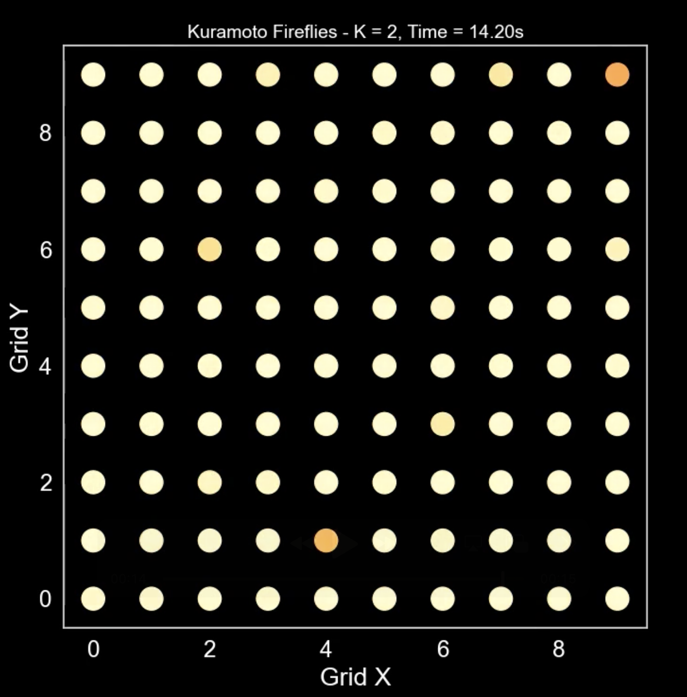
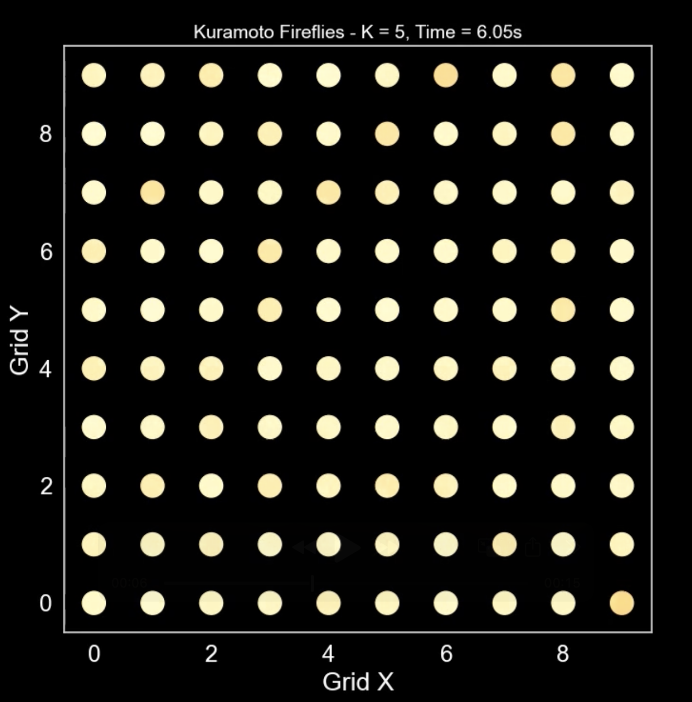
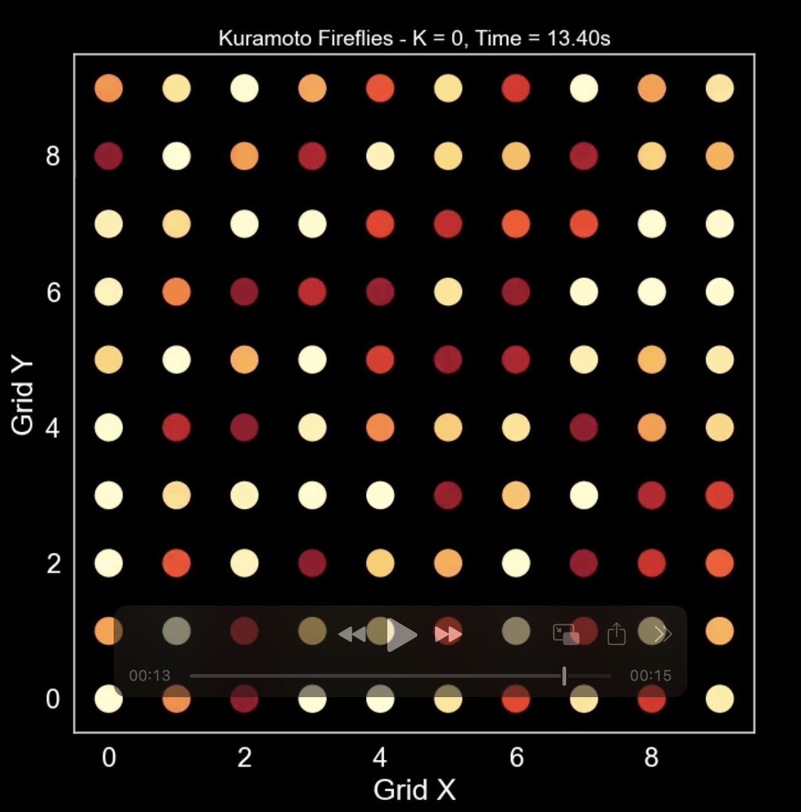
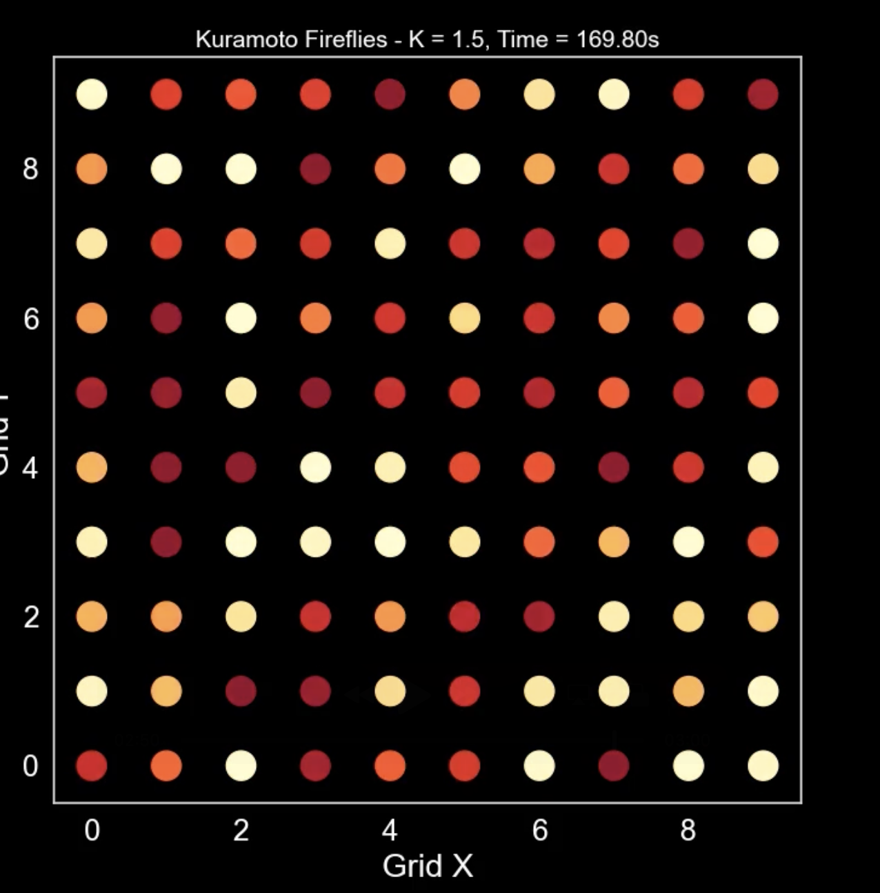
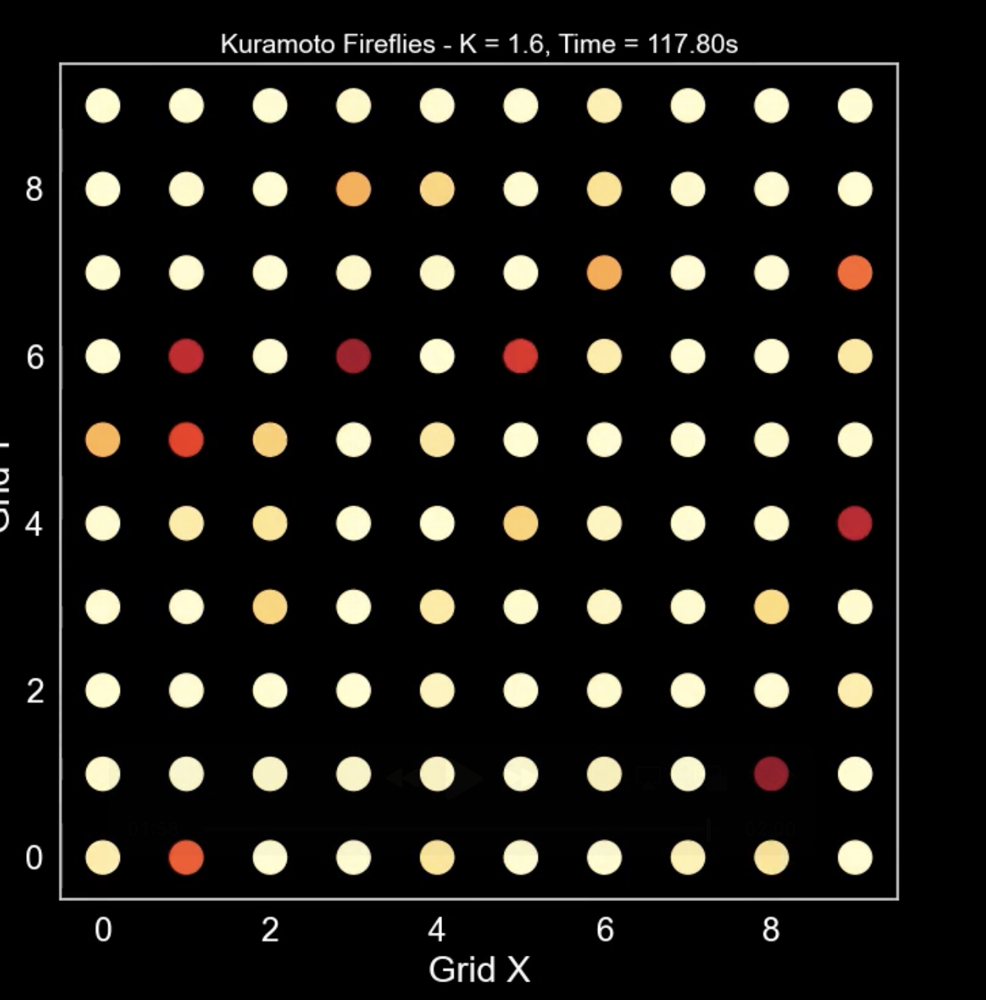

### 蔵本モデルが解き明かすリズムの秘密 #### 〜拍手のリズムはなぜ揃うのか？〜 <img src="assets/images/title.png" height="400px"> --- ### 自己紹介 <div class="profile-container"> <div class="profile-left"> * さめ(мег-сск) * 🧑💻 フリーランスのソフトウェアエンジニア * 🧑🎓 社会人学生として通信制大学在学中 * 得意分野: * 📸 コンピュータビジョン (画像認識/点群処理) * 🌍 空間情報処理 (地理情報/リモートセンシング) * ☁️ クラウドインフラ設計/IaC (AWS, GCP) * [GitHub](https://github.com/s-sasaki-earthsea-wizard) * [YouTube](https://www.youtube.com/@SyotaSasaki-EW) * [Speaker Deck](https://speakerdeck.com/syotasasaki593876) </div> <div class="profile-right"> <img src="assets/images/icon_circle.png" alt="avatar" height="350px" width="350px"> </div> </div> --- ### 今日話すこと <div class="simple-box"> * 「同期現象 (バラバラだったリズムが揃う現象)」をモデル化できる蔵本モデルについて話します！ * 蔵本モデルの数式の意味を噛み砕いて説明します * 「ホタルの点滅」を再現した蔵本モデルのシミュレーションを見てみましょう * 蔵本予想と結合係数の臨界点 * 代表的な「相転移」の紹介 </div> --- ## 蔵本モデルの概要 --- ### 蔵本モデルとは？ <div class="simple-box"> * 蔵本モデルとは、「リズムが揃う」現象をモデル化するための数理モデル * 1975年に蔵本由紀先生によって提唱された * メトロノームのリズムが揃っていく動画を見ましょう！ </div> <img src="assets/images/Metronom-2.png" width="60%"> --- ### 蔵本モデルの応用例 <div class="simple-box"> * 「リズムが揃う現象」をモデル化できる！ * 👏拍手のリズム * ホタルの発光リズム * 電力系統 (発電機の周波数が乱れると大停電になる！) * 心臓の鼓動のリズム (これの乱れが心房細動) </div> --- ### 蔵本モデルの数式 $$ \frac{d\theta_i}{dt} = \omega_i + \frac{K}{N} \sum_{j=1}^N \sin(\theta_j - \theta_i) $$ <div class="simple-box"> * $\theta_i$ は $i$ 番目の振動子の位相 * $\omega_i$ は $i$ 番目の振動子の角速度 * $K$ は相互作用の強さ * $N$ は振動子の数 </div> --- ### 蔵本モデルの右辺第2項の意味 $$ \frac{K}{N} \sum_{j=1}^N \sin(\theta_j - \theta_i) $$ <div class="simple-box"> * $\theta_i$を自分の拍手のリズム、$\theta_j$を他の人の拍手のリズムだと思おう * この式は、自分とみんなのリズムのズレの平均を表している * 結合定数 $K$ が大きいほど、リズムが揃いやすくなる </div> --- ### 結合係数 $K$ の意味 <div class="simple-box"> * 結合係数 $K$ が大きいほど、リズムが揃いやすくなる * $K$ が小さいとリズムは揃わない * 拍手の例で例えれば、「どれだけ他の人の拍手のリズムを意識して合わせようとするか」という意識を数値化したもの * $K=0$ の場合は、相手の拍手のリズムをまったく意識せず自分のリズムを維持しようとする、ということ * この後、シミュレーションで実例を見よう！ </div> --- ### 蔵元モデルの式をもう一度見る $$ \frac{d\theta_i}{dt} = \omega_i + \frac{K}{N} \sum_{j=1}^N \sin(\theta_j - \theta_i) $$ <div class="simple-box"> * 「自分のリズムの変化率」は「他の人とのリズムのズレの平均」と結合係数 $K$ によって決まる * 結合係数 $K = 0 $ の時は右辺第2項が消え、自分のリズムの速さ$\omega_i$を維持する * 結合係数 $K$ が大きいほど、他の人とのリズムのズレが自分のリズムの変化率に影響する </div> --- ## 蔵本モデルのシミュレーション --- ### 蔵本モデルのシミュレーション <div class="simple-box"> * GitHubに蔵本モデルのシミュレーションのコードを公開してくれている方がいたので、その方のコードをいじって遊んでみました！ * https://github.com/fabridamicelli/kuramoto * このコードを使って、ホタルの点滅のリズムが揃う様子を見てみましょう！ </div> --- ### ホタルの点滅: $K=2$ <div class="simple-box"> * 時間をかけて徐々にリズムが揃っていく！ </div>  --- ### ホタルの点滅: $K=5$ <div class="simple-box"> * 結合係数が大きいと、リズムがすぐに揃う！ </div>  --- ### ホタルの点滅: $K=0$ <div class="simple-box"> * 結合係数が0のとき、いつまでもリズムは揃わない！ </div>  --- ### 結合係数の不思議な振る舞い <div class="simple-box"> * $K=1.5$ の時はリズムが揃わない * $K=1.6$ の時は(時間がかかるが)リズムが揃う </div> <div class="container"> <div class="col-left">  </div> <div class="col-right">  </div> </div> --- ## 蔵本予想と相転移 --- ### 蔵本予想 <div class="simple-box"> * 結合係数が臨界点$K_c$を超えると、急激にリズムが揃うようになる * 0℃で水が急に氷になるようなイメージ </div> 臨界点$K_c$は: $$ K_c = \dfrac{2}{\pi g(\omega)} $$ * $g(\omega)$ は角速度の分布関数 --- ### 臨界点の計算 <div class="simple-box"> * 今回のシミュレーションの角速度の分布関数$g(\omega)$は、標準正規分布$N(0,1)$ </div> $$ g(\omega) = \frac{1}{\sqrt{2\pi}} e^{-\frac{\omega^2}{2}} $$ --- ### 平均場の周波数 <div class="simple-box"> * 振動子全体の平均的な角速度は0になる * この平均的な角速度を「平均場の周波数」と呼ぶ * 系全体の分布を$g(0)$で代表できる </div> $$ g(0) = \frac{1}{\sqrt{2\pi}} $$ --- ### 臨界点の計算 $$ K_c = \dfrac{2}{\pi g(0)} = \dfrac{2}{\pi \frac{1}{\sqrt{2\pi}}} = \sqrt{\dfrac{8}{\pi}} \simeq 1.596 $$ <div class="simple-box"> * $K=1.6$ は臨界点をギリギリ超えているので、リズムが揃う！ * $K=1.5$ は臨界点を下回っているので、リズムは揃わない * このように、臨界点を超えると急激に性質が変化する現象を「**相転移**」と呼ぶ </div> --- ### 相転移の例 <div class="simple-box"> * 相転移は様々な物理現象で現れる * 水が0℃で氷になる * 水が100℃で蒸発する * 磁石が高温で磁性を失う * 真空の相転移 (宇宙の始まり) </div> <div class="container"> <div class="col-left"> </div> <div class="col-right"> </div> </div> --- ### 蔵本予想の証明 <div class="simple-box"> * 蔵本モデルは1975年に提唱され、1984年に蔵本予想が定式化された * 蔵本予想は、2012年に当時九州大の千葉逸人先生によって証明された！ * https://arxiv.org/abs/1008.0249 * なので「蔵本-千葉定理」とこれからは呼ぶべきはず </div> --- ### まとめ <div class="simple-box"> * 「リズムが揃う」現象を蔵本モデルが説明できる * 結合定数は周りとのリズムがズレているのを合わせようとする作用を表す * 結合定数が臨界点を超えると、急激にリズムが揃うようになる (蔵本予想、2012年に証明) * 蔵本モデルは代表的な相転移現象のモデル </div> --- ### LT登壇者の募集 <div class="simple-box"> * 物理学集会ではLT登壇者を募集しています！ * どんなジャンルでもOK！ * 応募がないと主催がまたLTという名目のジャイアンリサイタルを開くことになります... * 興味のある方は物理学集会のDiscordサーバーまで！ </div> <img src="assets/images/qrcode.png" width="200px"> --- ### 告知 <div class="simple-box"> * 次回開催は6月28日を予定しています * LTだけでなく、YouTubeの物理の動画を「この動画をみんなで見たい！」という提案も大歓迎です！ </div>